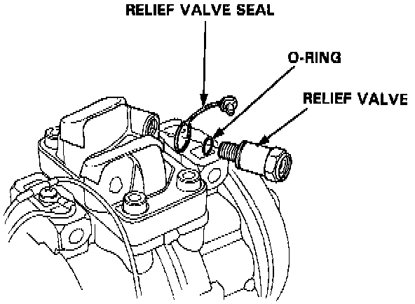

High Pressure Safety Valve HVAC: Service and Repair
RemovalNOTE: Make sure the suction and discharge joints are plugged with caps.

1. Remove the relief valve, 0-ring, relief valve seal.
CAUTION: Do not draw compressor oil. Make sure there is no foreign matter in system.
Installation
1. Clean off the mating surface.
2. Apply compressor oil to the 0-ring.
3. Tighten the relief valve.
TORQUE: 13.5 N-m (1.35 kg-m, 9.76 lb-ft)
4. Check for leaks, and attach the relief valve seal.